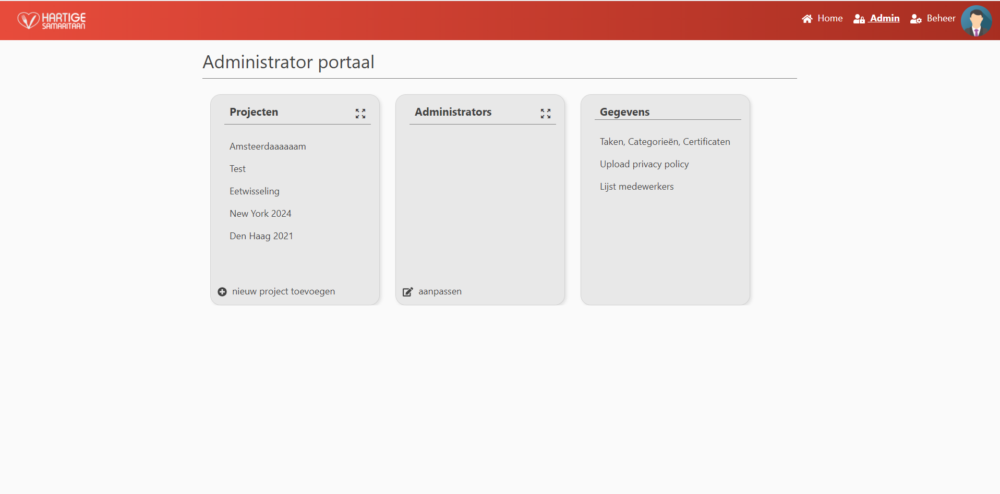
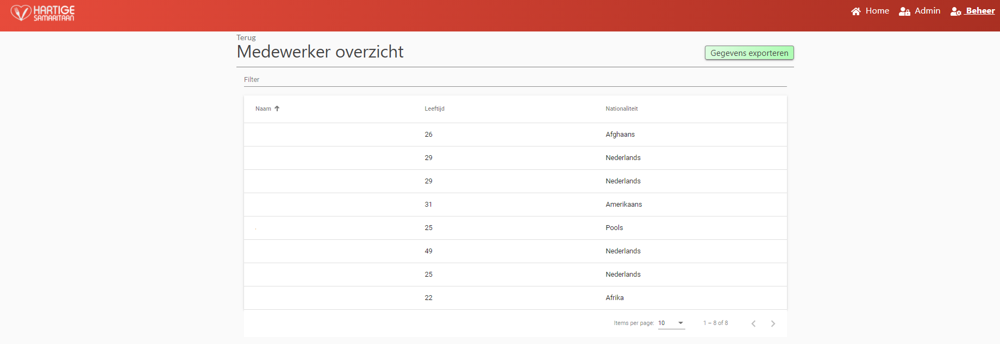

Admin
This page is only accesseble to users with the administrator role.
An administrator has various options on the website to manage the workings of the site.
Most of these options are located on the administrator page.

Add project
Clicking nieuw project toevoegen wil open a modal where the user is asked to fill in the project details.
Most fields are required.
After filling in the details, clicking Opslaan will add a project*.
Clicking Annuleren will close the modal without saving.
*Be careful. Once a project is added it cannot be removed.
Although all of its details can be changed later.
After a project is added, the projectcard Projecten wil refresh.
When more then five projects exists, it is possible to expand the project card by clicking the zoom out button in the top right corner.
Add/Remove administrator
Clicking aanpassen in the administrator card will open a modal where it is possible to add or remove administrators.
In this modal, the user is able to select multiple (other) users to be added or removed as an administrator.
The top bar Zoek gebruiker offers a way to quickly search for specific users.
The modal offers two tabs Toevoegen (add administrater) and Verwijderen (remove administrator).
Users selected when either of these tabs are active, will be processed when the Versturen button is pressed.
Annuleren wil close the model without adding or removing users as an administrator.
Create/Update/Delete Tasks, Categories, CertificateTypes
Clicking Taken, categorieën, Certificaten will redirect the user to a page with a similair layout as this one.
On this page the user is able to add different kinds of entities (Tasks, Categories and CertificateTypes) by clicking nieuwe toevoegen.
The buttons will each open a different modal in which the user can enter details about the entity.
Clicking on the entity name wil redirect to a details page.

Each of these pages offers the option to delete or update the entity.
When the user clicks Verwijderen (delete), he wil be asked to confirm his decision.
When the user clicks Wijzigen a modal will be opened where he can update the details.
Task details page
The task details page offers the option to add a required certificate to the task.
When a certificateType is added to a task, users are required to be in possesion of a certificate of that type in order to be able to add availabilities in a project.
If the user is not in possesion of a certificate with that type, or the certificate in his possesion is expired, Shifts containing this task wil not be presented to the user.
Clicking on the name of a required certificate will lead to a details page on which the administrator is able to delete or update the required certificate.

Upload Privacy policy
Clicking the update privacy policy button wil open a modal in which the administrator is able to update the current privacy policy with a new one. After a new privacy policy has been uploaded, all users wil be prompted to read and accept the updated version.
Get an overview of employees
Clicking Lijst medewerkers will redirect the administrator to a page where he wil get an overview of all employees registered with the system. 